Les dix mondes
Chaque monde est planté dans le précédent, et chacun tord une règle que tu croyais connaître. Les chiffres ci-dessous viennent directement du code du mod.
La Surface
Tu te réveilles sur la Surface avec le Parchemin de l'artisan et une carte esquissée. La progression s'arrête au fer tant que tu n'as rien prouvé : enchantements, enclumes et Nether ne répondent qu'après le monde 2, l'End après le monde 8. Le Sanctuaire du Gardien t'attend à quelques centaines de blocs du point de départ. Active son autel pour réveiller le Gardien du bloc.
Boss
Gardien du bloc300 PVIl laisse le Noyau du Gardien, l'Établi matriciel et quatre Terres de monde 0. Ton Parchemin devient le Journal de l'artisan.
Fabriqué à l'Établi matriciel
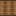
Berceau d'âme- 4Planches de chêne
- 1Fil de laine
 2Racines
2Racines
- Fil de retour ×2
- 2Fil de laine
- 1Perle de l'Ender
- Poupée du hasard
- 2Planches de chêne
- 1Teinture rouge
- 2Lingot d'or
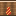
Table de classe- 1Table de forge
- 6Lingot de fer
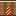
Autel des âmes- 4Obsidienne pleureuse
- 4Lingot d'or
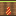
Cuve de spores- 1Chaudron
- 4Lingot de fer
Jungle toxique
Une jauge de toxine monte de 1 par seconde tant que tu respires l'air de la jungle, et baisse de 2 dans l'eau ou sous la pluie. À 50 tu ralentis, à 75 tu t'affaiblis, à 100 elle ronge ta vie. Le Masque filtrant divise la montée par deux, la Bouillie de racines encore par deux pendant cinq minutes, et un Antidote retire 50 d'un coup.
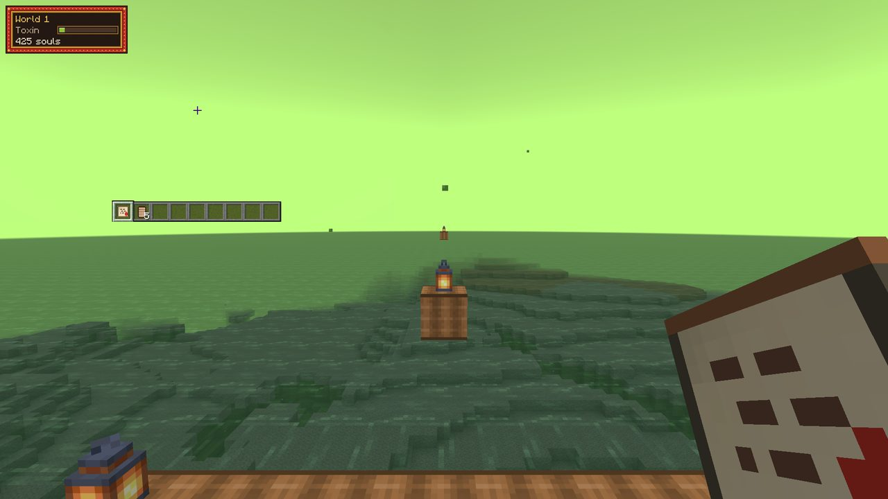
L'ouvrir
- 1Noyau du Gardien
- 16Lingot de fer
- 16Bûche de chêne
Cuve de spores
Le résultat dépend du temps de fermentation.
- 1Chaudron
- 4Lingot de fer
- Antidote ×2
 4Spores
4Spores- 2Fiole
- Masque filtrant
 2Chitine
2Chitine- 8Spores
- 2Ficelle
- Bouillie de racines ×2
- 3Racines
- 2Bol
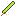
Épée de sporite- 8Sporite
- 1Racines
- Casque de chitine
- 5Chitine
- Plastron de chitine
- 8Chitine
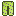
Jambières de chitine- 7Chitine
- Bottes de chitine
- 4Chitine
Ce que tu emporteras
- SporesBase des antidotes.
- RacinesBois vivant.
- SporiteMinerai du monde 1.
- ChitineArmure du monde.
- AntidoteRéduit la toxine de 50.
- Masque filtrantDivise par 2 la montée de toxine.
- Épée de sporite
- Bouillie de racinesToxine ralentie pendant 5 minutes.
Armure 16 d’armure, 1 de robustesse, une arme à 7 de dégâts à ce palier.
Dix structures
Combat
Ruche de spores, Nid de Sporelins, Puits de toxine
Exploration et butin
Arbre creux, Serre abandonnée, Cocon géant
Histoire
Temple racinaire, Clairière purifiée
Utilité
Village de cueilleurs
Secret
Sanctuaire de l'artisan
Filons géants
La chaleur monte de 1 par seconde à moins de trois blocs de la lave, et de 0,5 sous y 40. Plus haut et loin de la lave, elle redescend de 1, de 2 dans l'eau. Au-delà de 50 tu as faim, de 75 ta pioche traîne, à 100 tu brûles. Chaque pièce de l'ensemble thermique réduit la montée de 12,5 %, l'Eau de refroidissement retire 50, le Pain de glace la freine pendant cinq minutes.
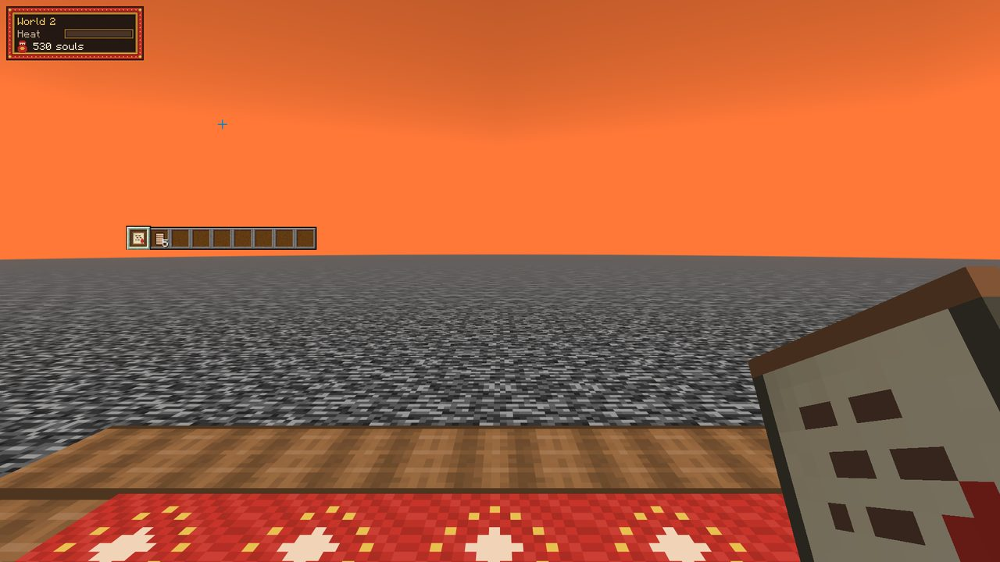
L'ouvrir
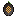
- 1Noyau de la Reine
- 8Sporite
- 16Spores
Fonderie de cendre
Garde la température dans le vert.
- 1Haut fourneau
- 4Sporite
- 2Chitine
 Lingot de cendre
Lingot de cendre 1Minerai géant
1Minerai géant 1Roche ardente
1Roche ardente
- Eau de refroidissement ×2
- 2Glace
- 2Fiole
- Foreuse
- 6Lingot de cendre
- 4Roche ardente
- 4Poudre de redstone
- Pain de glace ×2
- 2Pain
- 1Glace
- Marteau de cendre
- 8Lingot de cendre
- 1Bâton
- Casque thermique
- 5Lingot de cendre
- Plastron thermique
- 8Lingot de cendre
- Jambières thermique
- 7Lingot de cendre
- Bottes thermique
- 4Lingot de cendre
Ce que tu emporteras
- Roche ardenteCombustible puissant.
- Minerai géantUn filon entier en un bloc.
- Lingot de cendreBase de l'équipement du monde 2.
- Eau de refroidissementRéduit la chaleur de 50.
- ForeuseMine en 3x3 et brûle de la Roche ardente.
- Marteau de cendre
- Pain de glaceChaleur ralentie pendant 5 minutes.
Armure 17 d’armure, 2 de robustesse, une arme à 9 de dégâts à ce palier. Divise par 2 la chaleur.
Dix structures
Combat
Caverne de salamandres, Fournaise géante, Puits de lave
Exploration et butin
Mine effondrée, Rail suspendu, Cristallerie
Histoire
Forge abandonnée, Sanctuaire du filon
Utilité
Camp de mineurs
Secret
Atelier de l'artisan
Donjon sans fin
Ici, ni surface ni ciel : rien que le donjon. Les portes scellées cèdent aux Clés de donjon, fabriquées à la Table du Geôlier une fois le motif de la serrure reproduit. Toutes les cinq minutes, les salles se réorganisent, avec dix secondes de préavis. La lumière est rare : apporte la tienne.
L'ouvrir
- 1Noyau du Titan
- 8Lingot de cendre
- 16Roche ardente
Table du Geôlier
Reproduis le motif de la serrure.
- 1Table de forge
- 4Lingot de cendre
- Carte du labyrinthe
- 4Papier
 1Fragment scellé
1Fragment scellé
- Kit de crochetage ×2
- 4Pépite de fer
- 1Fragment scellé
- Piège portatif ×2
- 2Lingot de fer
- 1Fragment scellé
 Clé de donjon
Clé de donjon- 3Fragment scellé
- 4Pépite d'or
- Ration de cellule ×2
- 1Pain
- 1Steak
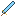
Lame du Geôlier- 8Fragment scellé
- 1Bâton
- Casque de Geôlier
- 5Fragment scellé
- Plastron de Geôlier
- 8Fragment scellé
- Jambières de Geôlier
- 7Fragment scellé
- Bottes de Geôlier
- 4Fragment scellé
Ce que tu emporteras
- Clé de donjonOuvre une porte scellée, une fois.
- Fragment scelléPièges et équipement.
- Carte du labyrintheRévèle les structures proches.
- Kit de crochetageOuvre une serrure ordinaire.
- Piège portatifImmobilise un mob.
- Lame du Geôlier
- Ration de celluleSatiété durable.
Armure 18 d’armure, 3 de robustesse, une arme à 11 de dégâts à ce palier.
Dix structures
Combat
Arène, Cour des Geôliers, Salle mobile
Exploration et butin
Labyrinthe de pièges, Trésorerie, Crypte
Histoire
Bibliothèque scellée, Salle des clés
Utilité
Prison
Secret
Cellule de l'artisan
Archipel des tempêtes
Des îles flottantes sous un orage permanent. Toutes les 30 secondes, une rafale frappe quiconque se tient à ciel ouvert, sauf accroupi ou à l'abri, et tu l'entends arriver deux secondes avant. Toutes les 45 secondes, la foudre marque un point près des joueurs exposés par des étincelles, puis tombe trois secondes plus tard. Les élytres restent clouées au sol tant que le Maître des saisons n'est pas tombé : on traverse en Planeur et au Grappin.
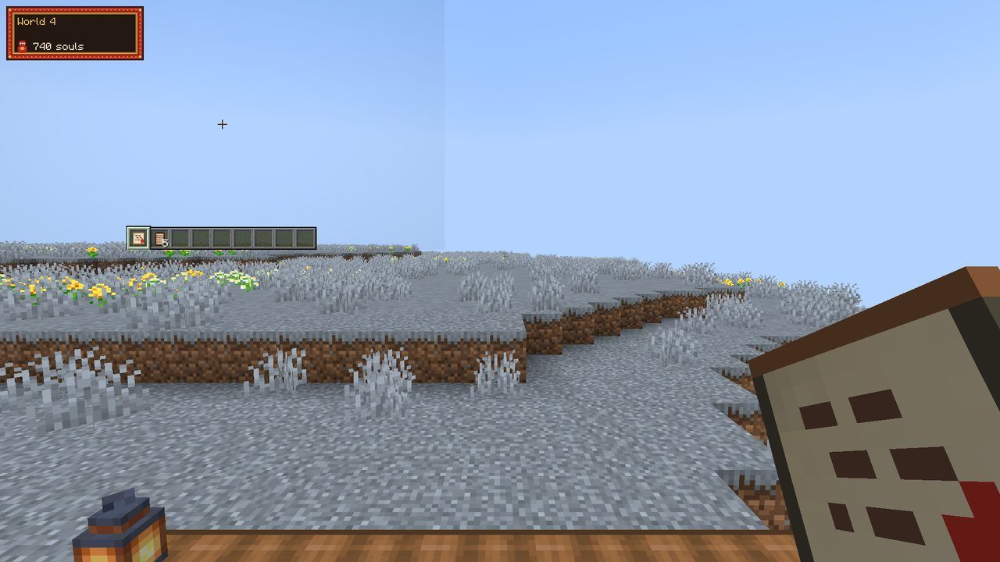
L'ouvrir
- 1Noyau du Geôlier
- 8Clé de donjon
- 8Fragment scellé
Forge à foudre
Demande un éclair ou de l'essence de tempête.
- 2Paratonnerre
- 4Lingot de cendre
- 4Fragment scellé
- Planeur
 8Membrane de raie
8Membrane de raie- 4Bâton
 2Essence de tempête
2Essence de tempête
- Grappin
 2Cristal céleste
2Cristal céleste- 8Ficelle
- 3Lingot de fer
- Fruit de nuage ×2
- 2Pomme
- 1Essence de tempête
- Lance de foudre
- 8Cristal céleste
- 1Bâton
- Casque céleste
- 5Cristal céleste
- Plastron céleste
- 8Cristal céleste
- Jambières céleste
- 7Cristal céleste
- Bottes céleste
- 4Cristal céleste
Ce que tu emporteras
- Membrane de raieToile du planeur.
- Essence de tempêteÉnergie de la Forge à foudre.
- Cristal célesteÉquipement et Graine du monde 5.
- PlaneurPlane entre les îles.
- GrappinTe tire vers une surface.
- Lance de foudre
- Fruit de nuageChutes réduites pendant 3 minutes.
Armure 19 d’armure, 4 de robustesse, une arme à 13 de dégâts à ce palier.
Dix structures
Combat
Nid de raies, Paratonnerre géant, Épave volante
Exploration et butin
Ruine suspendue, Pont brisé, Phare des tempêtes
Histoire
Temple céleste, Observatoire
Utilité
Village flottant
Secret
Jardin des nuages
Profondeur sans lumière
Aucune lumière, et une jauge de bruit. Courir ajoute 4 par seconde, marcher 0,6 ; rester immobile retire 1,5, s'accroupir 3. Au-dessus de 50, toutes les créatures à moins de 28 blocs viennent te chercher. L'obscurité envahit ta vue toutes les dix secondes, sauf si tu portes une Lanterne solaire allumée (20 minutes) ou une vision nocturne. Le Baume de silence efface ton bruit.
L'ouvrir
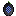
- 1Noyau du Roi
- 8Essence de tempête
- 8Cristal céleste
Autel obscur
Fonctionne seulement dans le noir complet.
- 4Obsidienne
- 4Cristal céleste
- 2Essence de tempête
- Lanterne solaire
- 4Essence de tempête
- 1Lanterne
- 2Lingot d'or
- Sonar
 4Éclat d'ombre
4Éclat d'ombre- 2Éclat d'améthyste
- Baume de silence ×3
- 1Éclat d'ombre
- 1Fiole de miel
- Champignon muet ×2
- 2Champignon brun
- 1Éclat d'ombre
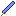
Lame d'ombre- 8Éclat d'ombre
- 1Bâton
- Casque nocturne
- 5Éclat d'ombre
- Plastron nocturne
- 8Éclat d'ombre
- Jambières nocturne
- 7Éclat d'ombre
- Bottes nocturne
- 4Éclat d'ombre
Ce que tu emporteras
- Éclat d'ombreBase de l'équipement du monde 5.
 Fragment de diamant4 fragments donnent 1 diamant.
Fragment de diamant4 fragments donnent 1 diamant.- Lanterne solaire20 minutes de lumière.
- SonarRévèle les créatures proches.
- Baume de silenceEfface ton bruit.
- Lame d'ombre
- Champignon muetBruit réduit pendant 5 minutes.
Armure 20 d’armure, 6 de robustesse, une arme à 16 de dégâts à ce palier.
Dix structures
Combat
Nid de rôdeurs, Cimetière d'échos, Cathédrale noire
Exploration et butin
Tour éteinte, Mine sans fond, Puits de lumière
Histoire
Sanctuaire aveugle, Galerie de fresques
Utilité
Village silencieux
Secret
Abri de l'artisan
Royaume inversé
Toutes les 90 secondes, la gravité s'inverse : tu montes pendant six secondes, puis tu redescends lentement pendant douze. Un avertissement tombe cinq secondes avant. Les Bottes de gravité ignorent l'inversion ; un Stabilisateur ou une Pomme retournée te gardent stable 30 secondes.
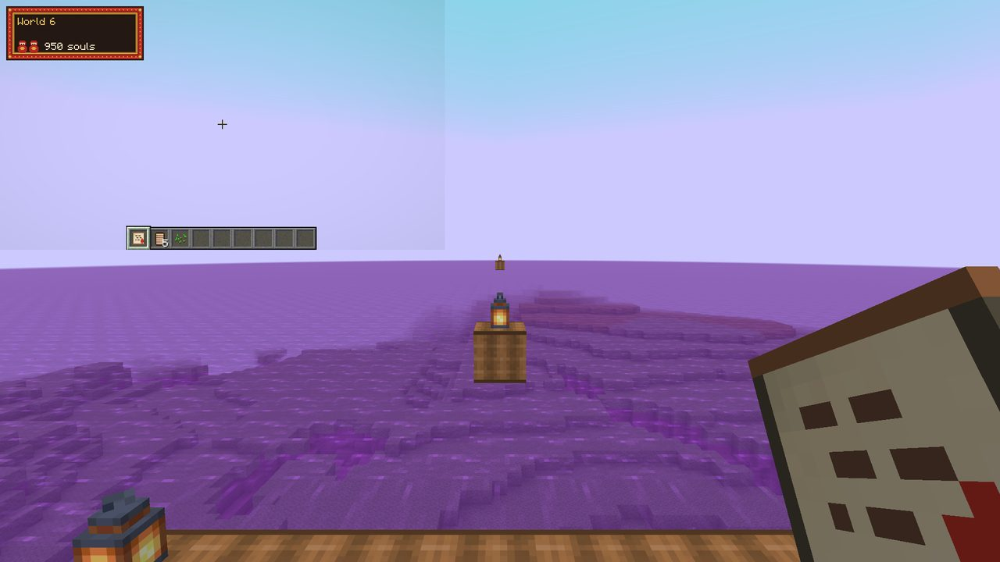
L'ouvrir
- 1Noyau du Mangeur
- 8Éclat d'ombre
- 4Fragment de diamant
Inverseur
Chaque gain s'accompagne d'un défaut.
- 2Observateur
- 6Éclat d'ombre
- Bottes de gravité
 6Alliage instable
6Alliage instable 2Cristal inversé
2Cristal inversé
- Stabilisateur ×3
- 1Alliage instable
- 2Quartz du Nether
- Pomme retournée ×2
- 2Pomme
- 1Cristal inversé
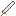
Lame miroir- 8Alliage instable
- 1Bâton
- Casque miroir
- 5Alliage instable
- Plastron miroir
- 8Alliage instable
- Jambières miroir
- 7Alliage instable
- Bottes miroir
- 4Alliage instable
Ce que tu emporteras
- Alliage instableBase de l'équipement du monde 6.
- Cristal inverséInverseur et Graine du monde 7.
- Bottes de gravitéIgnorent les inversions de gravité.
- StabilisateurAnnule une inversion.
- Lame miroir
- Pomme retournéeStabilité pendant 30 secondes.
Armure 22 d’armure, 8 de robustesse, une arme à 19 de dégâts à ce palier.
Dix structures
Combat
Salle des miroirs, Cage suspendue, Noyau instable
Exploration et butin
Tour inversée, Cité au plafond, Bassin renversé
Histoire
Laboratoire de gravité, Escalier impossible
Utilité
Refuge des Reflets
Secret
Jardin flottant
Océan sous pression
Sous l'eau, tu respires sur ta propre jauge d'oxygène : environ 50 secondes sans équipement, cinq minutes avec le scaphandre complet. Remonter à la surface la recharge de 10 par seconde. Sous y 110, la pression commence à t'écraser ; le scaphandre complet repousse cette limite à y 40. Capsules d'oxygène et Algue d'apnée font gagner du temps, le Propulseur te ramène vite en haut.
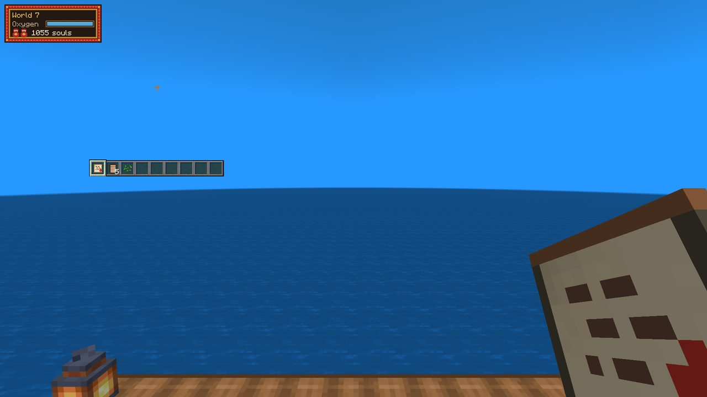
L'ouvrir
- 1Noyau du Double
- 8Alliage instable
- 4Cristal inversé
Presse abyssale
Doit être sous l'eau profonde.
- 2Piston
- 6Alliage instable
- 1Cristal inversé
- Capsule d'oxygène ×3
- 4Algue
 1Sel des profondeurs
1Sel des profondeurs
- Propulseur
 2Perle de pression
2Perle de pression- 4Alliage instable
- Perle de pression
- 6Sel des profondeurs
- 2Cristaux de prismarine
- Algue d'apnée ×3
- 3Algue séchée
- 1Sel des profondeurs
- Trident des fosses
- 8Sel des profondeurs
- 1Bâton
- Casque de plongée
- 5Sel des profondeurs
- Plastron de plongée
- 8Sel des profondeurs
- Jambières de plongée
- 7Sel des profondeurs
- Bottes de plongée
- 4Sel des profondeurs
Ce que tu emporteras
- Sel des profondeursProtège de la pression.
- Perle de pressionScaphandre et Graine du monde 8.
- Capsule d'oxygèneRend de l'oxygène.
- PropulseurAccélère sous l'eau.
- Trident des fosses
- Algue d'apnéeOxygène prolongé d'1 minute.
Armure 24 d’armure, 10 de robustesse, une arme à 23 de dégâts à ce palier. Résiste à la pression.
Dix structures
Combat
Fosse des chasseurs, Récif mort, Cité engloutie
Exploration et butin
Épave, Cloche de plongée, Grotte à air
Histoire
Temple abyssal, Phare sous-marin
Utilité
Station de pression
Secret
Coffre-fort des profondeurs
Saisons accélérées
Le temps passe trois fois plus vite : un jour et une nuit tiennent en huit minutes, chaque saison en deux. L'été te creuse l'estomac, l'hiver te ralentit, le printemps et l'automne sont tes fenêtres. Une Conserve de saison te protège deux minutes, le Sablier retient l'horloge 90 secondes, et l'Atelier du temps n'accepte de recettes qu'à l'aube et au crépuscule.
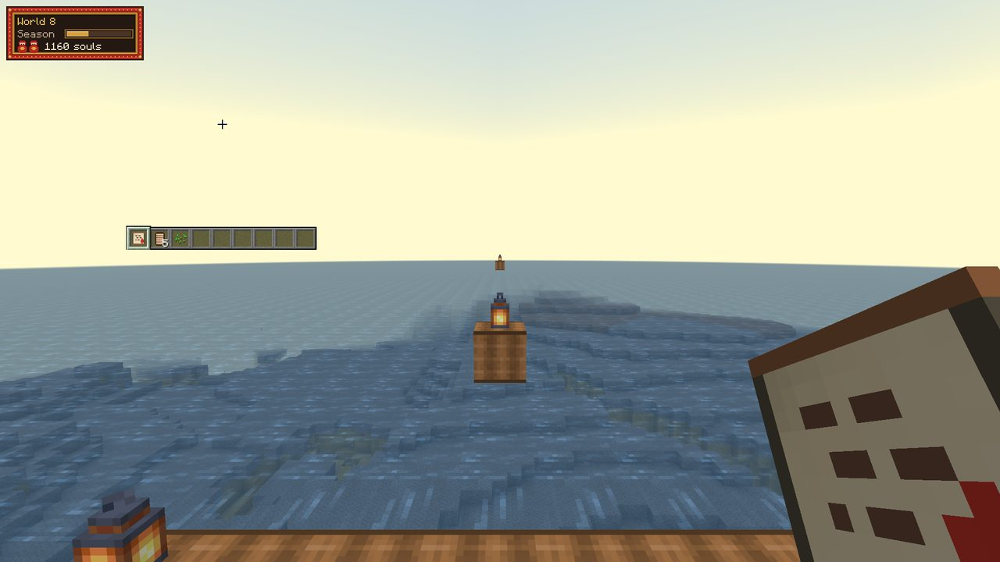
L'ouvrir
- 1Noyau du Léviathan
- 4Perle de pression
- 8Sel des profondeurs
Atelier du temps
Accepte les recettes à l'aube et au crépuscule.
- 2Horloge
- 6Sel des profondeurs
- 1Perle de pression
- Sablier
 6Sable temporel
6Sable temporel- 2Verre
 1Fragment de saison
1Fragment de saison
- Conserve de saison ×3
- 1Fragment de saison
- 3Fiole
- Conserve de saison sucrée ×2
- 4Baies sucrées
- 1Sable temporel
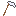
Faux des saisons- 8Sable temporel
- 1Bâton
- Casque saisonnière
- 5Sable temporel
- Plastron saisonnière
- 8Sable temporel
- Jambières saisonnière
- 7Sable temporel
- Bottes saisonnière
- 4Sable temporel
Ce que tu emporteras
- Sable temporelBase de l'équipement du monde 8.
- Fragment de saisonGraine du monde 9.
- SablierRalentit le cycle du monde.
- Conserve de saisonProtège de la saison en cours.
- Faux des saisons
- Conserve de saison sucréeProtège de la saison en cours.
Armure 26 d’armure, 12 de robustesse, une arme à 28 de dégâts à ce palier.
Dix structures
Combat
Ville accélérée, Ruine vieillissante, Horloge géante
Exploration et butin
Serre des saisons, Jardin figé, Camp éphémère
Histoire
Observatoire solaire, Bibliothèque des siècles
Utilité
Marché du crépuscule
Secret
Tombeau temporel
Terre agitée
Toutes les 60 secondes, le sol se soulève : tu es projeté, pris de nausée, et jusqu'à quatre blocs mal accrochés autour de toi s'effondrent. Tu as trois secondes de préavis. À moins de 16 blocs d'une Ancre de terrain, rien ne bouge ; une Ancre utilisée te stabilise dix minutes, et les Bottes d'accroche te gardent debout.
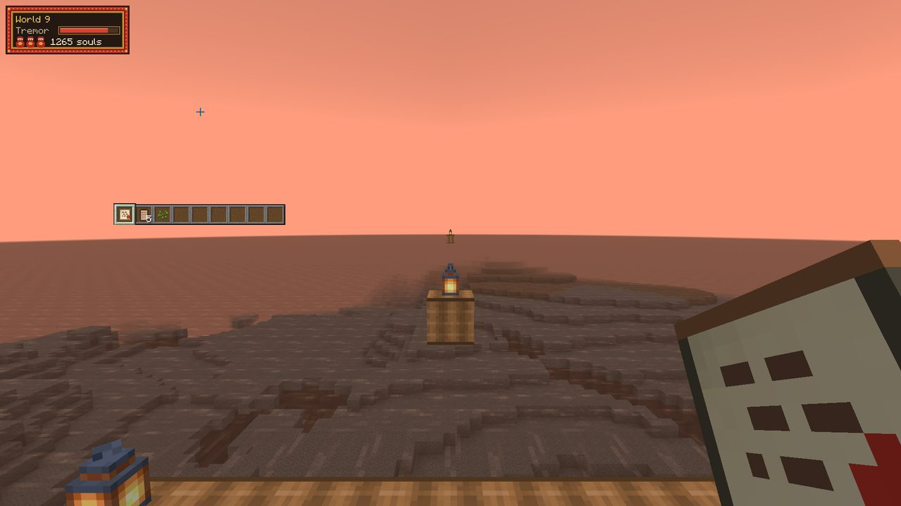
L'ouvrir
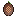
- 1Noyau du Maître
- 8Sable temporel
- 4Fragment de saison
Ancre de terrain
Stabilise le sol (rayon 16).
- 1Enclume
- 8Sable temporel
- 1Fragment de saison
- Ancre ×4
 2Fragment de terrain
2Fragment de terrain- 2Lingot de fer
- Bottes d'accroche
- 6Fragment de terrain
- 1Bottes en cuir
- Pain d'ancrage ×2
- 2Pain
- 1Fragment de terrain
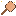
Masse sismique- 8Fragment de terrain
- 1Bâton
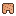
Casque de roche vivante- 5Fragment de terrain
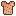
Plastron de roche vivante- 8Fragment de terrain
- Jambières de roche vivante
- 7Fragment de terrain
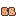
Bottes de roche vivante- 4Fragment de terrain
Ce que tu emporteras
- Fragment de terrainBase de l'équipement du monde 9.
 Cœur de terrainGraine du monde 10.
Cœur de terrainGraine du monde 10.- AncreCalme le sol (rayon 4).
- Bottes d'accrochePlus de chutes dues au sol.
- Masse sismique
- Clé de la dernière poupéeGraine du monde 10.
- Pain d'ancrageMoins de recul pendant 5 minutes.
Armure 28 d’armure, 14 de robustesse, une arme à 33 de dégâts à ce palier.
Dix structures
Combat
Tour qui marche, Forteresse mobile, Arène de terrain
Exploration et butin
Ruine mouvante, Gouffre vivant, Nid de mimiques
Histoire
Village enseveli, Veine battante
Utilité
Fort ancré
Secret
Sanctuaire stable
L'Atelier géant
Tu sors du dernier bloc dans un atelier bâti pour des géants, où ta propre base trône sur un établi comme un simple objet. Le monde est découpé en neuf zones de 256 blocs, chacune rejouant la règle d'un monde précédent, de la toxine aux secousses. Chaque ancien équipement retrouve sa place.
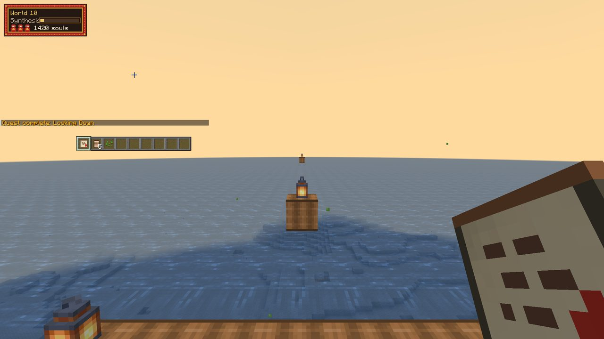
L'ouvrir
- 1Noyau du Terrain
- 1Cœur de terrain
- 1Clé de la dernière poupée
Métier final
Tisse les matériaux de tous les mondes.
- 1Métier à tisser
- 8Fragment de terrain
- 1Cœur de terrain
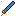
Lame de l'Artisan 8Fil d'Artisan
8Fil d'Artisan 1Éclat d'Artisan
1Éclat d'Artisan- 1Épée de sporite
- Casque de l'Artisan
- 5Fil d'Artisan
- 1Casque de chitine
- Plastron de l'Artisan
- 8Fil d'Artisan
- 1Plastron céleste
- Jambières de l'Artisan
- 7Fil d'Artisan
- 1Jambières de plongée
- Bottes de l'Artisan
- 4Fil d'Artisan
- 1Bottes de gravité
- Festin de l'atelier
- 1Bouillie de racines
- 1Pain de glace
- 1Fruit de nuage
- 1Conserve de saison sucrée
Ce que tu emporteras
- Fil d'ArtisanBase de l'équipement final.
- Éclat d'ArtisanAméliore l'équipement final.
- Lame de l'Artisan
- Festin de l'atelierRegroupe deux effets.
Armure 30 d’armure, 16 de robustesse, une arme à 40 de dégâts à ce palier.
Dix structures
Combat
Tour d'aiguilles, Forge colossale, Poupée effondrée
Exploration et butin
Coffre géant, Bibliothèque colossale, Établi titanesque
Histoire
Atelier géant de l'artisan, Porte de bloc
Utilité
Cité des géants
Secret
Trône de la créature